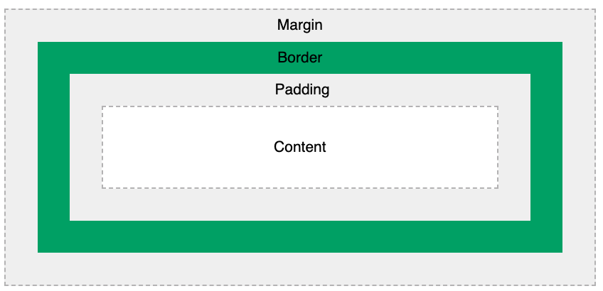

Box model là gì?
Box Model là một khái niệm cơ bản trong CSS mô tả cách mà mỗi phần tử HTML được hiển thị trên trang web. Theo
khái niệm Box Model, mỗi phần tử HTML được xem như là một hộp (box), và gồm bốn phần tử chính: viền (border),
đệm (padding), nội dung (content), và khoảng cách bên ngoài (margin).
Cụ thể, Box Model bao gồm các phần tử sau:

- Content: Đây là phần tử bên trong của hộp chứa nội dung của phần tử HTML, ví dụ như văn bản, hình ảnh,
video,...
- Padding: Đây là khoảng cách giữa phần nội dung và viền. Padding có thể được sử dụng để tạo ra khoảng cách
giữa phần nội dung và viền, hoặc để tạo ra khoảng cách giữa các phần tử.
- Border: Đây là đường viền xung quanh phần tử. Border có thể có nhiều kiểu dáng khác nhau và có thể được định
dạng với các thuộc tính như màu sắc, độ rộng,...
- Margin: Đây là khoảng cách giữa viền của phần tử và phần tử kế tiếp. Margin được sử dụng để tạo khoảng cách
giữa các phần tử và làm cho trang web trông đẹp hơn.
Model có 2 loại:
- Content-box: Là loại box mặc định của tất cả các phần tử HTML. Khi đặt kích thước của một phần tử HTML, chỉ
đặt kích thước cho phần nội dung của phần tử đó mà không tính đến padding, border và margin.
- Border-box: Là loại box tính toán kích thước bao gồm cả padding và border. Khi đặt kích thước của phần tử
HTML, kích thước bao gồm cả phần nội dung, padding, border và margin.
Sử dụng Box Model trong CSS, người dùng có thể thay đổi kích thước của phần tử HTML bằng cách thay đổi kích
thước của phần nội dung, padding, border và margin.